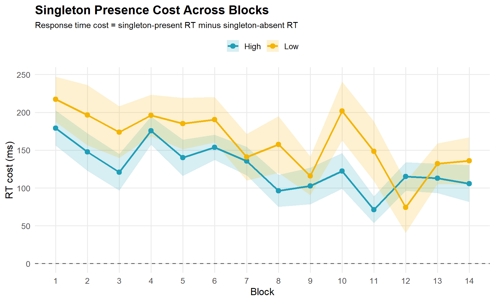
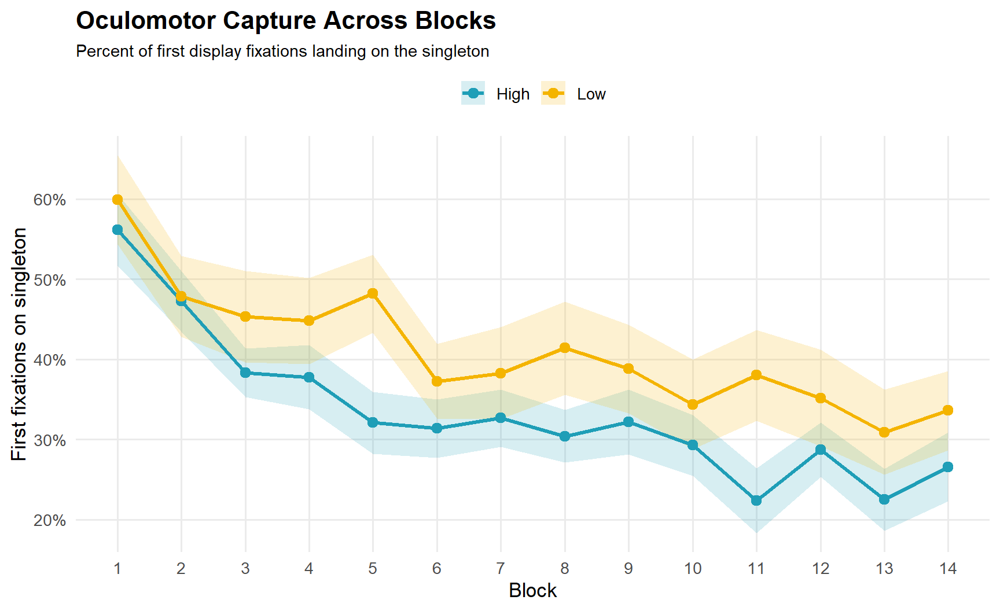
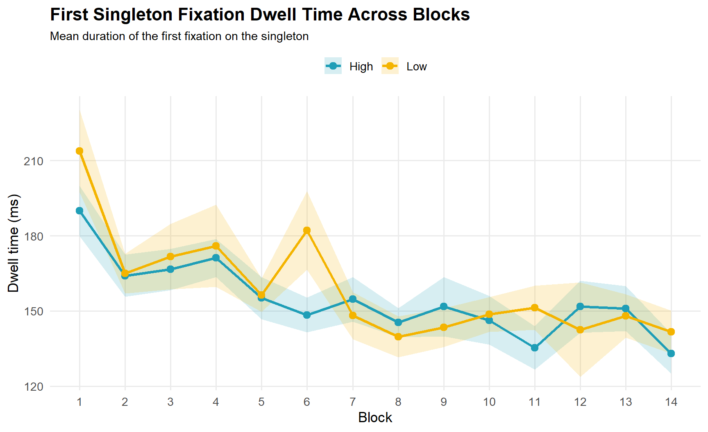

Goal For this portfolio piece, I wanted to practice creating figures that I want to use for my first year poster presentation. In the previous portfolio piece, I focused on understanding the eye-tracking dataset, creating a cleaner trial-level and fixation-level dataset, and looking at what the data is looking like. For this piece, I wanted to build on that understanding to make more polished visualizations that summarize the main patterns in the data.
Here are the figures I want to show in my poster:
These figures are useful because they show change over time. The broader research question is whether participants learned to avoid or disengage from distracting singleton colors across blocks.
library(tidyverse)
library(janitor)
library(scales)
library(broom)fix_raw <- read_tsv("data/fix_report.txt", na = c(".", "NA"), show_col_types = FALSE) %>%
clean_names() %>%
rename_with(~ str_remove(.x, "^t_"))
glimpse(fix_raw)## Rows: 65,876
## Columns: 29
## $ subjnum <dbl> 3, 3, 3, 3, 3, 3, 3, 3, 3, 3, 3, 3, 3, 3, 3, 3…
## $ block <dbl> 1, 1, 1, 1, 1, 1, 1, 1, 1, 1, 1, 1, 1, 1, 1, 1…
## $ trial <dbl> 2, 2, 2, 2, 2, 3, 3, 3, 3, 4, 4, 4, 4, 5, 5, 5…
## $ acc <dbl> 1, 1, 1, 1, 1, 1, 1, 1, 1, 1, 1, 1, 1, 1, 1, 1…
## $ rt <dbl> 1521, 1521, 1521, 1521, 1521, 997, 997, 997, 9…
## $ sing_pres <chr> "A", "A", "A", "A", "A", "A", "A", "A", "A", "…
## $ targ_loc <dbl> 3, 3, 3, 3, 3, 7, 7, 7, 7, 8, 8, 8, 8, 1, 1, 1…
## $ sing_loc <dbl> 7, 7, 7, 7, 7, 8, 8, 8, 8, 4, 4, 4, 4, 4, 4, 4…
## $ previous_sac_start_time <dbl> NA, 23, 273, 525, 783, NA, 158, 224, 392, NA, …
## $ current_fix_x <dbl> 953.8, 947.9, 1056.3, 1403.0, 1375.1, 971.0, 7…
## $ current_fix_y <dbl> 460.9, 487.8, 76.8, 441.9, 484.6, 485.4, 394.9…
## $ current_fix_index <dbl> 1, 2, 3, 4, 5, 1, 2, 3, 4, 1, 2, 3, 4, 1, 2, 3…
## $ current_fix_duration <dbl> 23, 232, 128, 198, 722, 158, 26, 126, 554, 274…
## $ current_fix_end <dbl> 21, 271, 523, 781, 1519, 156, 222, 390, 962, 2…
## $ previous_sac_end_time <dbl> NA, 39, 395, 583, 797, NA, 196, 264, 408, NA, …
## $ targ_shape <chr> "circle", "circle", "circle", "circle", "circl…
## $ targ_id <chr> "H", "H", "H", "H", "H", "V", "V", "V", "V", "…
## $ sing_col <chr> "green", "green", "green", "green", "green", "…
## $ resp <chr> "H", "H", "H", "H", "H", "V", "V", "V", "V", "…
## $ age <dbl> 18, 18, 18, 18, 18, 18, 18, 18, 18, 18, 18, 18…
## $ exp_vers <dbl> 3, 3, 3, 3, 3, 3, 3, 3, 3, 3, 3, 3, 3, 3, 3, 3…
## $ gender <chr> "F", "F", "F", "F", "F", "F", "F", "F", "F", "…
## $ hand <chr> "L", "L", "L", "L", "L", "L", "L", "L", "L", "…
## $ recording_session_label <chr> "SS_3", "SS_3", "SS_3", "SS_3", "SS_3", "SS_3"…
## $ condition <chr> "A", "A", "A", "A", "A", "A", "A", "A", "A", "…
## $ phase <chr> "practice", "practice", "practice", "practice"…
## $ sing_prob <chr> NA, NA, NA, NA, NA, NA, NA, NA, NA, NA, NA, NA…
## $ previous_fix_end <dbl> NA, 21, 271, 523, 781, NA, 156, 222, 390, NA, …
## $ current_fix_start <dbl> 0, 41, 397, 585, 799, 0, 198, 266, 410, 0, 318…The original dataset is fixation-level, meaning a single trial can appear on multiple rows if the participant made multiple fixations. We once again convert key variables to numeric, remove practice trials, create readable singleton-condition labels, and keep only the experimental phase.
fix_clean <- fix_raw %>%
mutate(
subjnum = as.numeric(subjnum),
block = as.numeric(block),
block_norm = block - 1,
trial = as.numeric(trial),
acc = as.numeric(acc),
rt = as.numeric(rt),
dwell = as.numeric(current_fix_duration),
targ_loc = as.numeric(targ_loc),
sing_loc = as.numeric(sing_loc),
current_fix_x = as.numeric(current_fix_x),
current_fix_y = as.numeric(current_fix_y),
current_fix_index = as.numeric(current_fix_index),
current_fix_start = as.numeric(current_fix_start),
sing_prob = case_when(
sing_pres == "A" ~ "Absent",
sing_prob == "high" ~ "High",
sing_prob == "low" ~ "Low",
TRUE ~ as.character(sing_prob)
),
sing_loc = if_else(sing_pres == "A", 0, sing_loc),
keep_rt = rt > 200 & rt <= 2500
) %>%
filter(
phase == "experiment",
block_norm >= 1,
block_norm <= 14,
!is.na(subjnum),
!is.na(trial),
!is.na(sing_prob)
)For the poster figures, I want one mean value per condition and block. We are using helper function that calculates the mean and standard error.
summary_se <- function(data, value_col, group_cols) {
data %>%
group_by(across(all_of(group_cols))) %>%
summarise(
mean = mean({{ value_col }}, na.rm = TRUE),
sd = sd({{ value_col }}, na.rm = TRUE),
n = n(),
se = sd / sqrt(n),
lower = mean - se,
upper = mean + se,
.groups = "drop"
)
}I used one consistent theme across all the figures so that they look like they belong together.
poster_theme <- theme_minimal(base_size = 13) +
theme(
plot.title = element_text(face = "bold", size = 16),
plot.subtitle = element_text(size = 11),
legend.position = "top",
legend.title = element_blank(),
panel.grid.minor = element_blank()
)
condition_colors <- c(
"High" = "#1F9EB7",
"Low" = "#F4B400",
"Absent" = "#8ECAE6"
)Response time cost compares singleton-present trials to singleton-absent trials. If participants are slower when the singleton is present, that suggests the distractor made the task harder. I calculated this separately for high-frequency and low-frequency singleton trials.
For each participant and block, I calculated:
trial_data <- fix_clean %>%
distinct(subjnum, trial, .keep_all = TRUE) %>%
filter(
keep_rt,
acc == 1,
!is.na(rt),
!is.na(sing_prob)
)
rt_by_subject_block <- trial_data %>%
group_by(subjnum, block_norm, sing_prob) %>%
summarise(mean_rt = mean(rt, na.rm = TRUE), .groups = "drop") %>%
pivot_wider(names_from = sing_prob, values_from = mean_rt) %>%
filter(!is.na(Absent)) %>%
mutate(
High = High - Absent,
Low = Low - Absent
) %>%
select(subjnum, block_norm, High, Low) %>%
pivot_longer(
cols = c(High, Low),
names_to = "singleton_frequency",
values_to = "rt_cost"
) %>%
filter(!is.na(rt_cost))
rt_cost_summary <- summary_se(
data = rt_by_subject_block,
value_col = rt_cost,
group_cols = c("block_norm", "singleton_frequency")
)
rt_cost_summary## # A tibble: 28 × 8
## block_norm singleton_frequency mean sd n se lower upper
## <dbl> <chr> <dbl> <dbl> <int> <dbl> <dbl> <dbl>
## 1 1 High 179. 131. 32 23.2 156. 202.
## 2 1 Low 217. 169. 32 29.8 187. 247.
## 3 2 High 148. 140. 32 24.7 123. 172.
## 4 2 Low 196. 223. 31 40.0 156. 236.
## 5 3 High 121. 137. 32 24.2 96.5 145.
## 6 3 Low 174. 194. 32 34.3 140. 208.
## 7 4 High 176. 106. 32 18.7 157. 195.
## 8 4 Low 196. 155. 32 27.4 169. 223.
## 9 5 High 140. 135. 32 23.9 116. 164.
## 10 5 Low 185. 193. 32 34.1 151. 219.
## # ℹ 18 more rowsggplot(rt_cost_summary, aes(
x = block_norm,
y = mean,
color = singleton_frequency,
fill = singleton_frequency
)) +
geom_ribbon(aes(ymin = lower, ymax = upper), alpha = 0.18, color = NA) +
geom_line(linewidth = 1.2) +
geom_point(size = 2.8) +
geom_hline(yintercept = 0, linetype = "dashed", color = "gray40") +
scale_color_manual(values = condition_colors) +
scale_fill_manual(values = condition_colors) +
scale_x_continuous(breaks = 1:14) +
labs(
title = "Singleton Presence Cost Across Blocks",
subtitle = "Response time cost = singleton-present RT minus singleton-absent RT",
x = "Block",
y = "RT cost (ms)"
) +
poster_theme
This figure shows whether singleton-present trials were slower than singleton-absent trials. Values above zero mean participants were slower when the singleton was present. As we can see the lines decrease across blocks, which would suggest participants became less distracted over time.
The next two figures require knowing whether a fixation landed on the target, singleton, or a nonsingleton item. The raw data contain fixation coordinates, but not a simple label for the item being fixated. So, we approximate the item by comparing each fixation coordinate to the eight possible item locations.
screen_width <- 1920
screen_height <- 1080
center_x <- screen_width / 2
center_y <- screen_height / 2
eccentricity <- 400
fix_zone <- 90
set_size <- 8
item_locations <- tibble(
item_loc = 1:set_size,
angle = (item_loc - 1) * 2 * pi / set_size,
item_x = center_x + eccentricity * sin(angle),
item_y = center_y - eccentricity * cos(angle)
)
fix_items <- fix_clean %>%
filter(
keep_rt,
acc == 1,
!is.na(current_fix_x),
!is.na(current_fix_y),
!is.na(dwell)
) %>%
mutate(row_id = row_number()) %>%
crossing(item_locations) %>%
mutate(distance = sqrt((current_fix_x - item_x)^2 + (current_fix_y - item_y)^2)) %>%
group_by(row_id) %>%
slice_min(distance, n = 1, with_ties = FALSE) %>%
ungroup() %>%
mutate(
curr_loc = if_else(distance <= fix_zone, item_loc, NA_integer_),
curr_item = case_when(
is.na(curr_loc) ~ NA_character_,
curr_loc == targ_loc ~ "Target",
curr_loc == sing_loc ~ "Singleton",
TRUE ~ "Nonsingleton"
)
)Oculomotor capture asks whether the eyes were pulled to the singleton distractor. For this figure, I looked at the first fixation that landed on a display item on each trial. Then I calculated the percentage of trials where that first fixation landed on the singleton.
first_display_fix <- fix_items %>%
filter(
sing_prob %in% c("High", "Low"),
!is.na(curr_item)
) %>%
group_by(subjnum, trial) %>%
arrange(current_fix_start, current_fix_index, .by_group = TRUE) %>%
slice(1) %>%
ungroup() %>%
mutate(first_on_singleton = curr_item == "Singleton")
oculomotor_by_subject_block <- first_display_fix %>%
group_by(subjnum, block_norm, sing_prob) %>%
summarise(
oculomotor_capture = mean(first_on_singleton, na.rm = TRUE) * 100,
.groups = "drop"
)
oculomotor_summary <- summary_se(
data = oculomotor_by_subject_block,
value_col = oculomotor_capture,
group_cols = c("block_norm", "sing_prob")
)
oculomotor_summary## # A tibble: 28 × 8
## block_norm sing_prob mean sd n se lower upper
## <dbl> <chr> <dbl> <dbl> <int> <dbl> <dbl> <dbl>
## 1 1 High 56.1 25.3 32 4.48 51.6 60.6
## 2 1 Low 59.9 31.5 32 5.57 54.3 65.5
## 3 2 High 47.2 21.6 32 3.81 43.4 51.1
## 4 2 Low 47.8 28.3 31 5.08 42.8 52.9
## 5 3 High 38.3 17.3 32 3.05 35.3 41.4
## 6 3 Low 45.3 32.4 32 5.72 39.6 51.0
## 7 4 High 37.8 22.7 32 4.01 33.8 41.8
## 8 4 Low 44.8 30.6 32 5.41 39.4 50.2
## 9 5 High 32.1 21.7 32 3.84 28.2 35.9
## 10 5 Low 48.2 27.7 32 4.90 43.3 53.1
## # ℹ 18 more rowsggplot(oculomotor_summary, aes(
x = block_norm,
y = mean,
color = sing_prob,
fill = sing_prob
)) +
geom_ribbon(aes(ymin = lower, ymax = upper), alpha = 0.18, color = NA) +
geom_line(linewidth = 1.2) +
geom_point(size = 2.8) +
scale_color_manual(values = condition_colors) +
scale_fill_manual(values = condition_colors) +
scale_x_continuous(breaks = 1:14) +
scale_y_continuous(labels = label_percent(scale = 1)) +
labs(
title = "Oculomotor Capture Across Blocks",
subtitle = "Percent of first display fixations landing on the singleton",
x = "Block",
y = "First fixations on singleton"
) +
poster_theme
This plot shows how often participants first looked at the singleton distractor. A decrease across blocks suggest that participants became better at avoiding the singleton. This is related to the idea of oculomotor suppression.
The previous figure asks whether the singleton captured the eyes. This figure asks what happened after the singleton was fixated. Dwell time measures how long participants stayed on the singleton once they looked at it. Shorter dwell times suggest faster disengagement.
first_singleton_fix <- fix_items %>%
filter(
sing_prob %in% c("High", "Low"),
curr_item == "Singleton",
!is.na(dwell)
) %>%
group_by(subjnum, trial) %>%
arrange(current_fix_start, current_fix_index, .by_group = TRUE) %>%
slice(1) %>%
ungroup()
dwell_by_subject_block <- first_singleton_fix %>%
group_by(subjnum, block_norm, sing_prob) %>%
summarise(
dwell_time = mean(dwell, na.rm = TRUE),
.groups = "drop"
)
dwell_summary <- summary_se(
data = dwell_by_subject_block,
value_col = dwell_time,
group_cols = c("block_norm", "sing_prob")
)
dwell_summary## # A tibble: 28 × 8
## block_norm sing_prob mean sd n se lower upper
## <dbl> <chr> <dbl> <dbl> <int> <dbl> <dbl> <dbl>
## 1 1 High 190. 57.1 32 10.1 180. 200.
## 2 1 Low 214. 90.5 30 16.5 197. 230.
## 3 2 High 164. 46.7 31 8.38 156. 172.
## 4 2 Low 165. 43.0 29 7.98 157. 173.
## 5 3 High 167. 45.9 31 8.25 158. 175.
## 6 3 Low 172. 69.2 28 13.1 159. 185.
## 7 4 High 171. 41.8 30 7.63 164. 179.
## 8 4 Low 176. 80.1 24 16.4 160. 192.
## 9 5 High 155. 45.1 29 8.38 147. 164.
## 10 5 Low 156. 34.5 27 6.65 150. 163.
## # ℹ 18 more rowsggplot(dwell_summary, aes(
x = block_norm,
y = mean,
color = sing_prob,
fill = sing_prob
)) +
geom_ribbon(aes(ymin = lower, ymax = upper), alpha = 0.18, color = NA) +
geom_line(linewidth = 1.2) +
geom_point(size = 2.8) +
scale_color_manual(values = condition_colors) +
scale_fill_manual(values = condition_colors) +
scale_x_continuous(breaks = 1:14) +
labs(
title = "First Singleton Fixation Dwell Time Across Blocks",
subtitle = "Mean duration of the first fixation on the singleton",
x = "Block",
y = "Dwell time (ms)"
) +
poster_theme
This plot shows how long participants stayed on the singleton after looking at it. As we can see, dwell time decreases across blocks, which suggests that participants may be learning to disengage from the singleton more quickly. This is related to the idea ofrapid disengagement.
This figure complements the oculomotor capture plot: one figure shows whether participants looked at the singleton, while the other shows how long they stayed there.
When I presented these figures, one question I received was whether I had tested the slope of the lines across blocks. The graphs visually suggest that oculomotor capture and dwell time may decrease over time, but a regression can help quantify whether the trend is negative.
So I wanted to add practicing that to this piece as well. These models estimate whether each outcome changes as block number increases. I am treating these as practice models for connecting visualizations to numerical summaries, not as the final statistical analysis for the research project.
oculomotor_slopes <- oculomotor_by_subject_block %>%
group_by(sing_prob) %>%
nest() %>%
mutate(
model = purrr::map(data, ~ lm(oculomotor_capture ~ block_norm, data = .x)),
results = purrr::map(model, broom::tidy)
) %>%
select(sing_prob, results) %>%
unnest(results) %>%
filter(term == "block_norm") %>%
select(
singleton_condition = sing_prob,
slope = estimate,
std_error = std.error,
statistic,
p_value = p.value
)
oculomotor_slopes## # A tibble: 2 × 5
## # Groups: singleton_condition [2]
## singleton_condition slope std_error statistic p_value
## <chr> <dbl> <dbl> <dbl> <dbl>
## 1 High -1.90 0.255 -7.46 4.44e-13
## 2 Low -1.60 0.359 -4.46 1.04e- 5This model estimates the change in oculomotor capture for each additional block. The slope analysis showed that oculomotor capture decreased across blocks for both singleton conditions.
In the high-frequency condition, the slope was about -1.90, meaning that first fixations on the singleton decreased by about 1.9 percentage points per block. In the low-frequency condition, the slope was about -1.60, meaning that first fixations on the singleton decreased by about 1.6 percentage points per block.
Both slopes were negative, which supports the visual pattern in the graph: participants became less likely to look first at the singleton as the experiment progressed. This is consistent with the idea that participants learned to avoid looking at the singleton over time.
The p-values were very small for both conditions, suggesting that the negative slopes were unlikely to be due to random noise in this exploratory model.
dwell_slopes <- dwell_by_subject_block %>%
group_by(sing_prob) %>%
nest() %>%
mutate(
model = purrr::map(data, ~ lm(dwell_time ~ block_norm, data = .x)),
results = purrr::map(model, broom::tidy)
) %>%
select(sing_prob, results) %>%
unnest(results) %>%
filter(term == "block_norm") %>%
select(
singleton_condition = sing_prob,
slope = estimate,
std_error = std.error,
statistic,
p_value = p.value
)
dwell_slopes## # A tibble: 2 × 5
## # Groups: singleton_condition [2]
## singleton_condition slope std_error statistic p_value
## <chr> <dbl> <dbl> <dbl> <dbl>
## 1 High -2.93 0.590 -4.95 0.00000106
## 2 Low -3.91 0.781 -5.00 0.000000887This model estimates the change in first singleton fixation dwell time for each additional block. The dwell-time slope analysis showed that first singleton fixation dwell time also decreased across blocks.
In the high-frequency condition, dwell time decreased by about 2.9 ms per block. In the low-frequency condition, dwell time decreased by about 3.9 ms per block.
Again, both slopes were negative, which supports the visual interpretation that participants disengaged from the singleton more quickly over time. This pattern is consistent with the rapid disengagement idea: even when participants looked at the singleton, they spent less time looking at it as the task progressed. The p-values were very small for both conditions here as well.
After estimating separate slopes for the high- and low-frequency singleton conditions, I also tested an interaction model. The interaction model asks whether the change across blocks differs between the two singleton conditions (high vs low).
oculomotor_interaction <- lm(
oculomotor_capture ~ block_norm * sing_prob,
data = oculomotor_by_subject_block
)
broom::tidy(oculomotor_interaction)## # A tibble: 4 × 5
## term estimate std.error statistic p.value
## <chr> <dbl> <dbl> <dbl> <dbl>
## 1 (Intercept) 47.6 2.64 18.0 3.23e-62
## 2 block_norm -1.90 0.310 -6.13 1.35e- 9
## 3 sing_probLow 5.35 3.74 1.43 1.53e- 1
## 4 block_norm:sing_probLow 0.300 0.440 0.682 4.96e- 1The interaction model showed a significant negative block effect for oculomotor capture.
In the high-frequency singleton condition, oculomotor capture decreased by about 1.90 percentage points per block. This means that participants were less likely to make their first fixation on the singleton as the experiment progressed.
The interaction term for the low-frequency condition was not significant. This means that the low-frequency slope was not statistically different from the high-frequency slope in this simplified model. The estimated low-frequency slope was also negative, about -1.60 percentage points per block.
Overall, this suggests that both high- and low-frequency singleton conditions showed decreasing oculomotor capture over time. The important conclusion is that participants looked at the singleton less often across blocks, but this simplified model did not show strong evidence that the decrease was different between the high- and low-frequency conditions.
dwell_interaction <- lm(
dwell_time ~ block_norm * sing_prob,
data = dwell_by_subject_block
)
broom::tidy(dwell_interaction)## # A tibble: 4 × 5
## term estimate std.error statistic p.value
## <chr> <dbl> <dbl> <dbl> <dbl>
## 1 (Intercept) 177. 5.54 31.9 2.13e-142
## 2 block_norm -2.93 0.664 -4.40 1.21e- 5
## 3 sing_probLow 12.0 8.03 1.49 1.36e- 1
## 4 block_norm:sing_probLow -0.981 0.965 -1.02 3.10e- 1The dwell time interaction model showed that first singleton fixation dwell time decreased across blocks. This suggests that participants became faster at disengaging from the singleton over time.
However, the interaction term was not significant, meaning the decrease was not clearly different between the high- and low-frequency conditions.
Overall for the final poster, these figures and analyses are very helpful in communicating two related hypotheses/ideas of our project. First, participants may learn to avoid looking at the singleton over time. Second, when they do look at the singleton, they may learn to disengage from it more quickly. Together, these patterns help visualize the learned oculomotor avoidance (combinayion of the two).